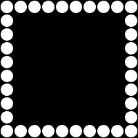
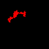
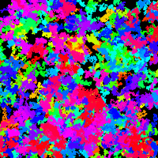
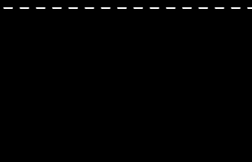
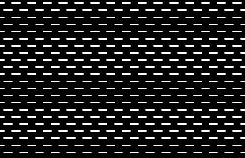

Open the Circle Frame workspace
Your task there is to use loops to frame the canvas with circles, as shown in the image above. Each circle set has an x or y that starts at 10 and increases by 20 each step until it reaches 200.
It is possible to do with a single for-loop, but you may want to use four individual loops to accomplish it.
In our previous Random Walk assignment, we used global variables to represent the location of a circle, and each draw cycle we added a random number between - 2 and +2. This created a wandering blob that eventually left the canvas.

In this workspace your first task is to implement the walk() function, whose purpose is to simulate 200 steps of a random walk. Instead of the global x and y variables that we used last before, the walk() function declares two local variables to represent the location to be randomly nudged. They are assigned a random value as a starting location.
Your first task is to implement a for loop that will iterate 200 times, each time drawing a circle at (x,y) before modifying both the x and y variables. This time you do not have to randomize the fill() of the circle, which has already been set to red using the parameter of the function.
If done properly, running the program should produce a small red squiggle. Each time you run it should produce a different squiggle at a different location.

The walk function is designed to take in a value as a parameter, then to use that value as its color. Being in HSB mode instead of RGB means that the parameter is used as the hue of the squiggle. The draw() function is currently calling walk(0), which represents red. Update the draw() function so that it makes a rainbow splatter by calling walk with a value from 0 to 360. This should produce a pattern like this:

Your first task there is to implement the dotted function, whose purpose is to draw a dotted line across the screen, starting at a specific x and y location, determined by the parameters.
You can do this by writing a for loop to represent the x value, which should be initialized to the parameter startX and increase by 20 until it goes past the width of the canvas. Each time it iterates, draw a 10 pixel wide horizontal line using the looping variable and the provided y parameter.
If done properly, running the program should produce a single dotted line toward the top of the window.

Now that the dotted() function works properly, our next goal is to create a pattern of dotted lines down the canvas.
Update the draw() function with a for loop to represent the y coordinate of the dotted line to be drawn, starting at 4 and increasing by 9 each step until it passes the height of the canvas.
You will be calling the draw function using your looping variable, but we want to stagger every other line. This can be done by looking at the y value before drawing, which should be alternating between even and odd. When the y value is even, call dotted(-5 , y) to start the line a bit off canvas. When it's odd, call dotted( 5, y) to start it a bit on the canvas. The end result should be the alternating pattern shown above.
Hover over the example above. Notice that a row of rectangles is drawn, and that they grow when the mouse.
Add a loop to generate a series of x values that are spaced 10 apart. Each time you will need to draw a rectangle, but the height needs to be related to how far the mouse is from the rectangle's x.
let h = 50/Math.abs(mouseX-x);
A rectangle that's drawn using the above as its height will grow as the mouse gets closer to it. You may notice that when you are very close to the center it grows too large and even flickers. You can fix this by maxing out h by assigning 20 to it when its value exceeds 20.
Hover your mouse over the demo above. Notice that when the mouse is close to a ring, it is drawn with a different strokeWeight() as the others.
In the draw() function, write a for loop whose looping variable will represent the radius of the circles, starting at 10 and increasing by 20 each step with a maximum of 130.
Determining how the circle should be drawn requires determining how far the mouse is from the center of the canvas.
let mouseDist = dist(mouseX,mouseY,150,150);
This is useful because when the mouse is exactly on a circle, mouseDist will match its radius. But being that exact is challenging, so we'll make it so that being within a range.
Inside your for loop, before drawing your circle, use an if statement to compare the mouse distance to the radius of the circle. If the distance is within 5 of the radius, draw it with a large stroke weight, otherwise draw it with a small stroke weight.
Hover over this demo and notice how the squares change color when the mouse is over them.
This is very similar to the Spaced Squares assignment that you've already completed, and much of the code will be the same. The difference is that each square drawn will have a different fill if the mouse is inside it. A helpful function would be the mouseInBox function that you wrote in the Boolean Functions assignment. Start by copying it into the Box Highlight workspace.
Like before each square is drawn 30 pixels apart, starting at 20. Before drawing each square, call your mouseInBox function to determine if you should pick a colorful fill or a white one.
Note, the mouseInBox function takes in four parameters, x, y, w, and h. If you're drawing using the square() function you only give it one value for the width and the height.
For example: You may be drawing with a line like this:
square( x, 20, 20);
Detecting if the mouse is in the same box will require one more parameter:
if( mouseInBox( x, 20, 20, 20) ){
}